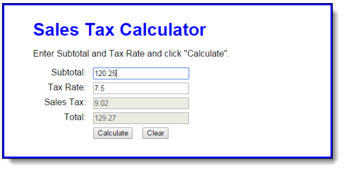
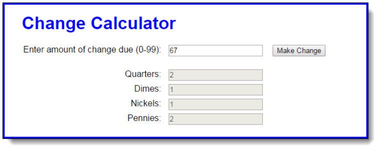
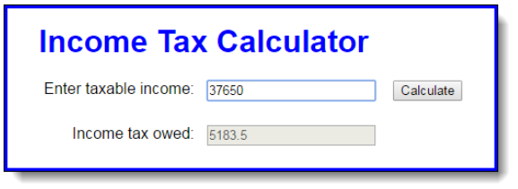
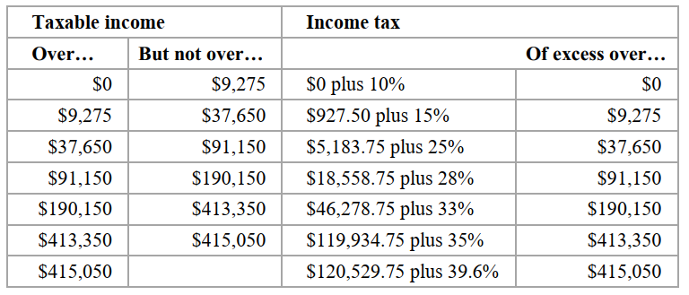

In this exercise, you’ll develop an application that calculates the sales tax and invoice total after the user enters the subtotal and tax rate.

1. Open the HTML and JavaScript files in this folder:
Assign03ch04\ch04\sales_tax\
Then, run the application to see the user interface shown above, although that interface won’t do anything until you develop the JavaScript for it.
2. In the JavaScript file, note that the $ function has been coded for you. It gets the object for the HTML element that’s specified by the id attribute.
3. Code an event handler (function) named processEntries() that gets the user entries, calculates the sales tax and total, and displays those results in the text boxes.
4. Code an onload event handler that attaches the processEntries() function to the click event of the Calculate button. Then, test what you have so far.
5. Add data validation to the processEntries() function. The subtotal entry should be a valid, positive number that’s less than 10,000. The tax rate should be a valid, positive number that’s less than 12. The error messages should be displayed in alert dialog boxes, and the error messages should be:
Subtotal must be > 0 and < 10000
Tax Rate must be > 0 and < 12
6. Add JavaScript that moves the cursor to the Subtotal field when the application starts and when the user clicks on the Calculate button.
7. Add the JavaScript event handler for the click event of the Clear button. This should clear all text boxes and move the cursor to the Subtotal field.
8. Add JavaScript event handlers for the click events of the Subtotal and Tax Rate text boxes. Each handler should clear the data from the text box.
9. Comment your code.
10. Complete this before class on Monday.
In this exercise, you’ll develop an application that tells how many quarters, dimes, nickels, and pennies are needed to make change for any amount of change from 0 through 99 cents. One way to get the results is to use the divide and modulus operators along with the parseInt() method for truncating the results so they are whole numbers.

1. Open the HTML and JavaScript files in this folder:
Assign03ch04\ch04\change_maker\
Then, run the application to see the user interface shown above, although that interface won’t do anything until you develop the JavaScript for it.
2. In the JavaScript file, note that the $ function has already been coded.
3. Code an event handler named processEntry() that gets the user’s entry and checks to make sure that it is a number between 0 and 99. If it isn’t, display an alert dialog box for the error. If it is valid, call a function named makeChange() and pass it the user’s entry.
4. Code the makeChange() function, which should have one parameter that accepts the user’s entry. This function shouldn’t return anything, but it should display the results in the text boxes for Quarters, Dimes, Nickels, and Pennies.
5. Code an onload event handler that attaches the processEntry() event handler to the click event of the Make Change button. Then, test this application.
6. Comment your code.
7. Complete this before class on Monday.
In this exercise, you’ll use nested if statements and arithmetic expressions to calculate the federal income tax that is owed for a taxable income amount.

This is the 2017 table for the federal income tax on individuals that you should use for calculating the tax:

1. Open the HTML and JavaScript files in this folder:
Assign03ch04\ch04\income_tax\
Note that the JavaScript file has some starting JavaScript code for this application, including the $ function and an onload event handler that attaches a function named processEntry() to the click event of the Calculate button and moves the focus to the first text box.
2. Code the processEntry() function. It should get the user’s entry and make sure it’s a valid number greater than zero. If it isn’t, it should display an error message. If it is valid, it should pass the value to a function named calculateTax(), which should return the tax amount. That amount should then be displayed in the second text box. The focus should be moved to the first text box whether or not the entry is valid.
3. Code the calculateTax() function, but to start, just write the code for calculating the tax for any amount within the first two brackets in the table above. The user’s entry should be converted to an integer, and the tax should be rounded to two decimal places. To test this, use income values of 9275 and 37650, which should display taxable amounts of 927 and 5183.50.
4. Add the JavaScript code for the next tax bracket. Then, add the JavaScript code for the remaining tax brackets.
5. Comment your code.
6. Complete this before class on Monday.